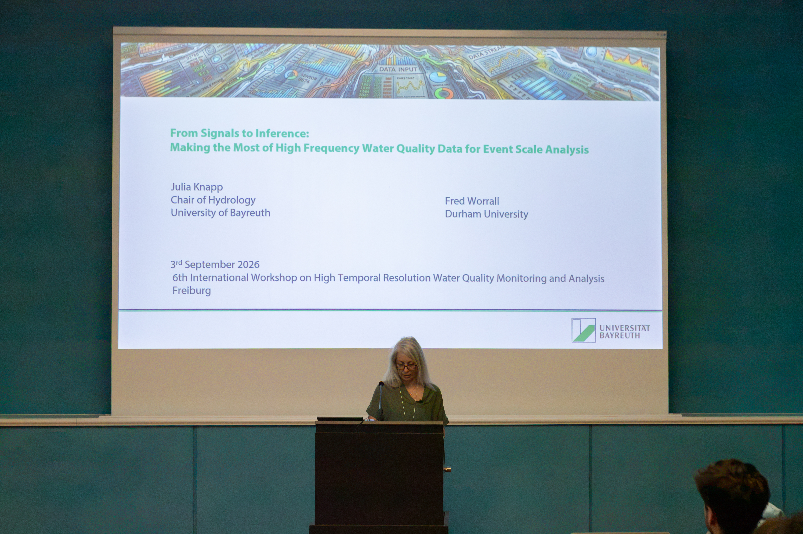
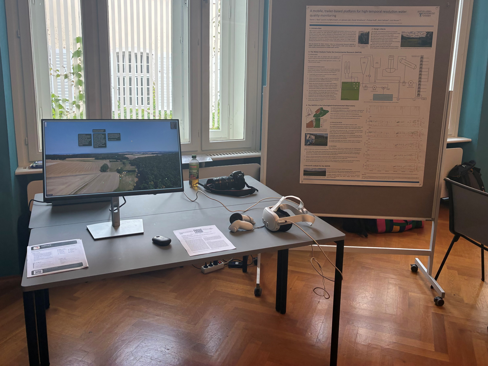
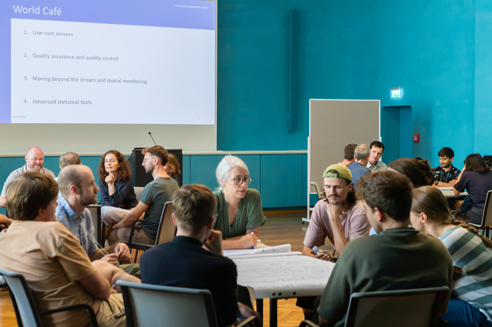
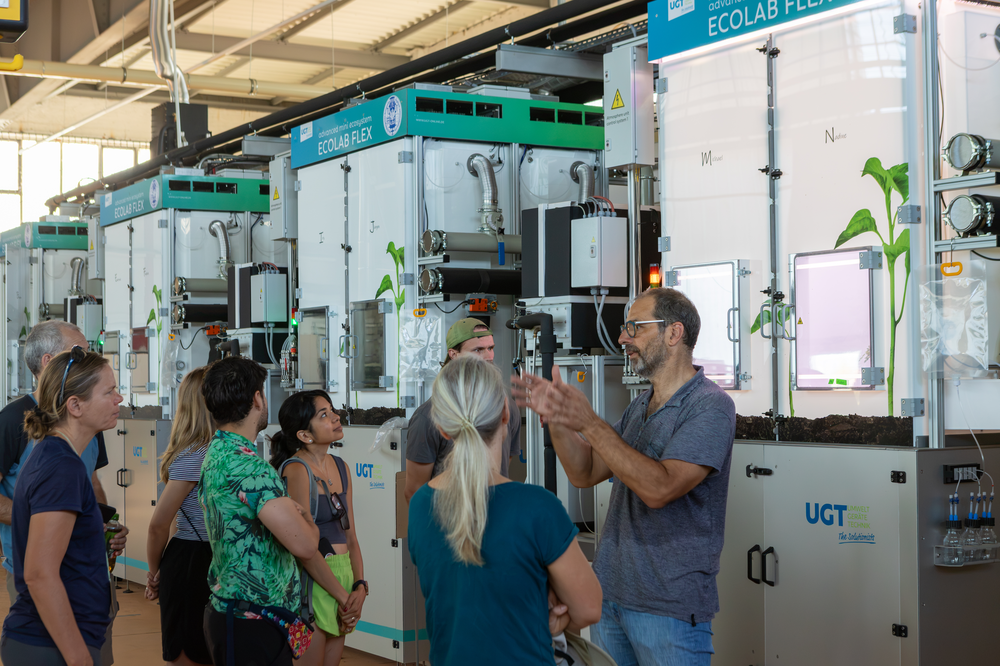

6th International Workshop on High Temporal Resolution Water Quality Monitoring and Analysis
2nd to 4th September 2026
Freiburg, Germany

Thanks to all who joined us in Freiburg! We look forward to seeing you in 2028 (location TBD)
The 6th International Workshop on High-Temporal Resolution Water Quality Monitoring and Analysis was held at the University
of Freiburg from 2nd to 4th September 2026. Over the three days, we explored three key themes around the central question
"What should be the next chapter for high-temporal frequency water quality investigations?"
The three themes were:
- Spatio-Temporal Patterns: Increasing data in space and time to detect trends and changes. With keynote presentation by Dr. Joachim Rozemeijer (Deltares, Netherlands): Best practice in high-frequency water quality monitoring and application to support a spatial targeting approach in two agricultural catchments
- Emerging High-Frequency Measurements: From the stream channel to the whole catchment.
- Smart Analytics: Machine learning and beyond for high-frequency water quality data. ´ With keynote presentation by Prof. Dr. Julia Knapp (University of Bayreuth, Germany): From Signals to Inference: Making the Most of High Frequency Water Quality Data for Event Scale Analysis

The themes were explored through a combination of oral and poster presentations by participants. The lovely weather meant we could take our poster session and coffee breaks outside, providing a wonderful setting for stimulating discussions!

A new addition to this edition of the workshop series was an Interactive Session, which allowed hands-on demonstrations and presentations of new developments in the field. Aaron Neill presented the Water Analysis Trailer for Environmental Research (WATER), a mobile sampling platform for mulit-source high-frequency water quality measurements, via an interactive 360-degree panoramic tour and virtual reality model. Heinke Paulsen presented the "WIKIE", a low-cost wick sampler for monitoring groundwater recharge, and a low-cost optical sensorlow-cost for nitrate and DOC measurements. Finally, Joachim Rozemeijer provided a demonstration of the Aquality App, which enables memebers of the public to easily make their own measurements of nutrients and salinisation in water.

The workshop also featured a World Café where we discussed key questions and topics shaping the future of high-temporal-resolution water quality monitoring. The open and engaging discussions brought together different perspectives and sparked many interesting ideas for future research and collaboration!

We were then very fortunate to have Prof Dr Markus Weiler lead us on a field excursion to close the workshop. This featured several stops to showcase the ongoing empirical hydrological research carried out at Freiburg, including the ecotrons of the Future Forests project:

And the fieldsite at Au on the edge of the Black Forest:

We would like to thank everyone for their enthusiastic participation in the workshop and look forward to seeing you again in 2028! Below you can find the full programme and book of abstracts for the 2026 edition.
Programme and book of abstracts
The programme and book of abstracts for the workshop can be viewed below:
Questions and Further Information
Please let us know if you have further questions at: workshop-hf-waterquality@hydrology.uni-freiburg.de
Find out about past editions of the workshop here
Organising Committee
The 2026 edition of the workshop is brought to you by:
- Dr. Carolin Winter (University of Freiburg, Germany)
- Dr. Aaron Neill (JLU Giessen, Germany)
- Walter Hettler (University of Freiburg, Germany)
- Jessica Fröbel (University of Freiburg, Germany)
- Fabian Nikq (University of Freiburg, Germany)